and Frequencies!
SYDE 671 · Assignment 2 · James Xie
PART 1.3:
DERIVATIVE
OF GAUSSIAN
I blur the image before finding edges to reduce grass texture. I also combine the blur and difference filters into one filter, then use color to show gradient direction.
Includes Part 1 Bells & Whistles · Mandatory gradient orientation
01 / Constructing the filters
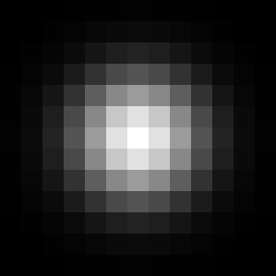
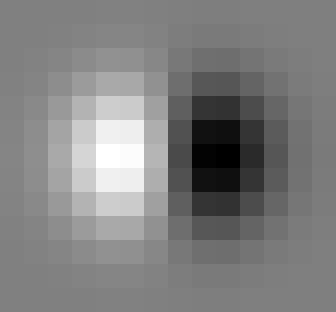
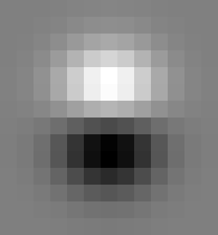
I use the same 512 × 512 grayscale image as Part 1.2, with float64 values from 0 to 1. The Gaussian blur has σ = 2. Its radius is ceil(3σ), so the filter is 13 × 13. I make a one-dimensional Gaussian with OpenCV, then multiply it by its transpose to make the two-dimensional filter.
g = cv2.getGaussianKernel(2 * ceil(3 * sigma) + 1, sigma, cv2.CV_64F)
G = g @ g.T
Kx = scipy.signal.convolve2d(G, [[1., -1.]], mode="full")
Ky = scipy.signal.convolve2d(G, [[1.], [-1.]], mode="full")DoG means derivative of Gaussian here. I combine the Gaussian with the same difference filters as Part 1.2. I use full convolution so no filter values are cut off. This adds one column to the x filter and one row to the y filter. The Gaussian sums to 1.0000000000000002; the DoG sums are -1.735e-18 and 0.000e+00. Their near-zero sums mean a constant image gives almost no derivative response.
I enlarge the filter pictures with nearest-neighbor resizing so each value is visible. Gaussian brightness is divided by its maximum. Both DoG pictures use the same scale: gray is zero, brighter is positive and darker is negative.
02 / Two steps or one convolution?
Route A: (I * G) * Dx · Route B: I * (G * Dx)
The same construction applies to Dy.
Both methods use SciPy with the same output size and reflected borders. Route A blurs the image, then finds its derivatives. Route B first combines the two filters, then filters the image once per direction.
X derivative
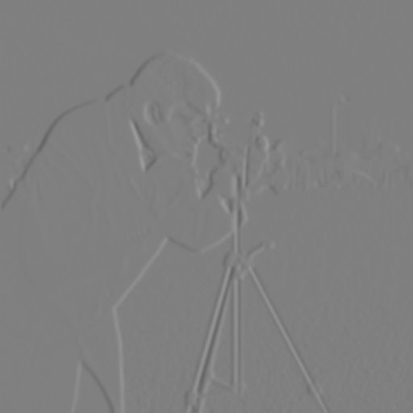

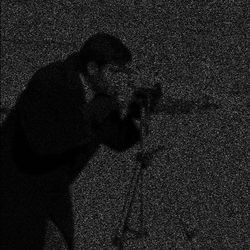
Y derivative
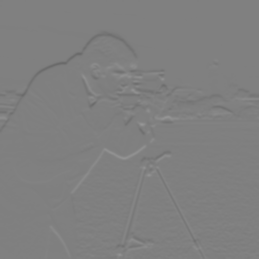
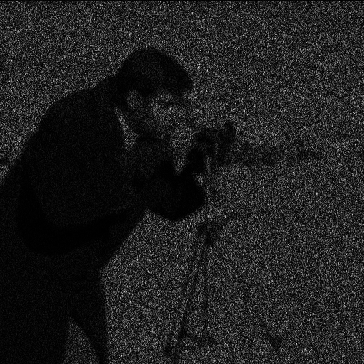
| Direction | Interior max absolute error | Full-image max absolute error |
|---|---|---|
| X | 1.052e-15 | 1.052e-15 |
| Y | 1.013e-15 | 1.013e-15 |
Combining the filters should give the same result, but borders and cropping can affect it. I leave out a 7-pixel border when checking the interior. Both directions pass rtol = 1e-11 and atol = 1e-14. For these filters and reflected borders, the full images also match to floating-point precision. The difference pictures are enlarged in brightness to show tiny rounding errors. Other border rules or cutting off the combined filter could give different results.
Filter implementation
def gaussian_kernel(sigma):
if not np.isfinite(sigma) or sigma <= 0:
raise ValueError('Sigma must be finite and positive.')
radius = int(np.ceil(3 * sigma))
column = cv2.getGaussianKernel(2 * radius + 1, sigma, cv2.CV_64F)
return column @ column.T
def dog_kernels(sigma):
gaussian = gaussian_kernel(sigma)
# Full convolution retains the complete derivative support and alignment.
return (gaussian, convolve2d(gaussian, DX, mode='full'),
convolve2d(gaussian, DY, mode='full'))
def filter_routes(image, sigma):
image = np.asarray(image, dtype=np.float64)
if image.ndim != 2 or not image.size or not np.isfinite(image).all():
raise ValueError('Expected a nonempty finite 2D image.')
gaussian, kx, ky = dog_kernels(sigma)
blurred = convolve2d(image, gaussian, mode='same', boundary='symm')
sequential_x = convolve2d(blurred, DX, mode='same', boundary='symm')
sequential_y = convolve2d(blurred, DY, mode='same', boundary='symm')
direct_x = convolve2d(image, kx, mode='same', boundary='symm')
direct_y = convolve2d(image, ky, mode='same', boundary='symm')
return {'gaussian': gaussian, 'kx': kx, 'ky': ky, 'blurred': blurred,
'sequential_x': sequential_x, 'sequential_y': sequential_y,
'direct_x': direct_x, 'direct_y': direct_y,
'margin': gaussian.shape[0] // 2 + 1}
03 / Compared with finite differences alone
Without smoothing · Part 1.2

With Gaussian smoothing · Part 1.3

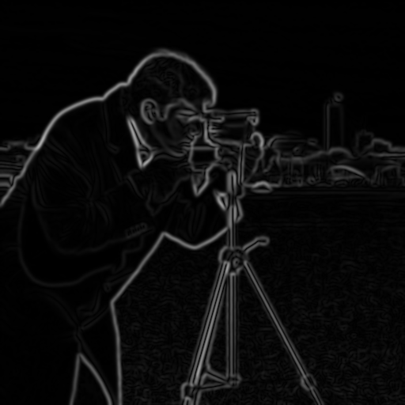
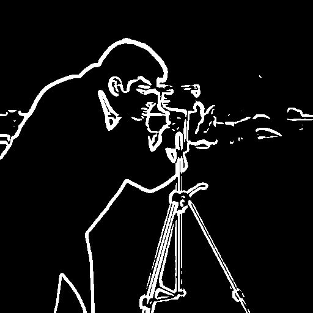
All magnitude pictures use white for 0.25; larger values are clipped only in the pictures. The derivative pictures also share one scale. I always make edge maps from the saved float values.
At T = 0.20, 3.39% of pixels are edges before smoothing and 0.00% after smoothing. Blur makes gradients weaker, so I choose a lower threshold for the smoothed image. The two selected maps use different thresholds. They show the visual difference, not an accuracy score.
I choose sigma = 2 and T = 0.04. Blur removes much of the grass texture and makes the subject outlines smoother and wider. T = 0.02 keeps more detail but also more clutter. T = 0.04 keeps much of the shoulder, face, camera and tripod. T = 0.06 loses more weak edges; 0.08 and 0.10 lose too much subject detail. Some thin edges are missing even in my chosen result. In the sigma comparison, I keep the threshold fixed to show what changing blur does. Fewer edge pixels do not always mean a better result.
Threshold sweep after smoothing
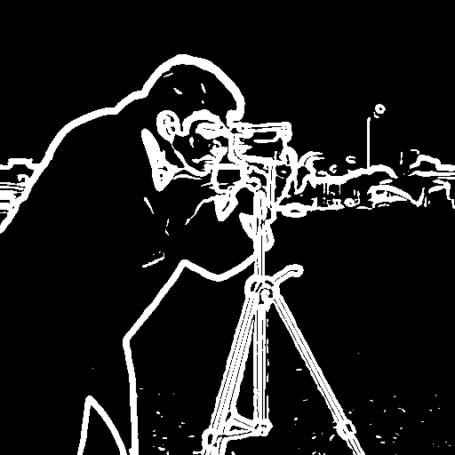

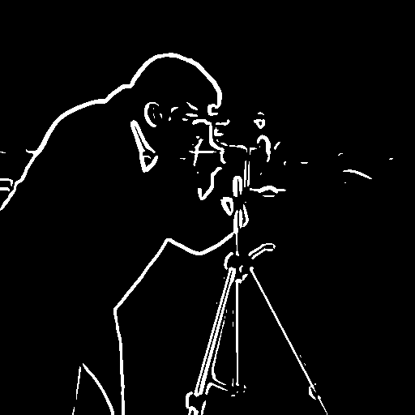
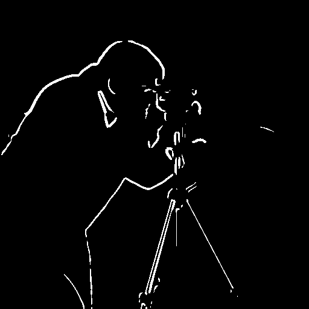
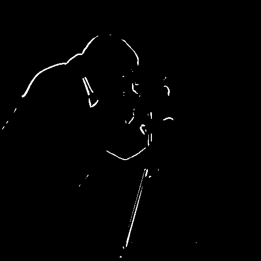
Gaussian scale sweep
I keep T = 0.04 and the display scales fixed below. Each Gaussian radius is ceil(3σ). A larger σ removes more fine texture, but it also widens edges and can merge nearby details.
σ = 1 · 7 × 7 Gaussian
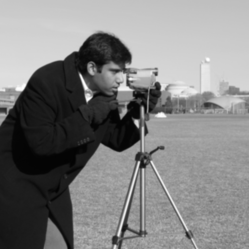
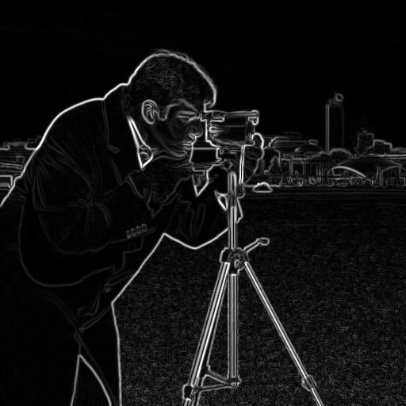
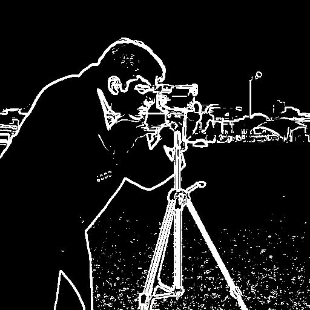
σ = 2 · 13 × 13 Gaussian


σ = 3 · 19 × 19 Gaussian


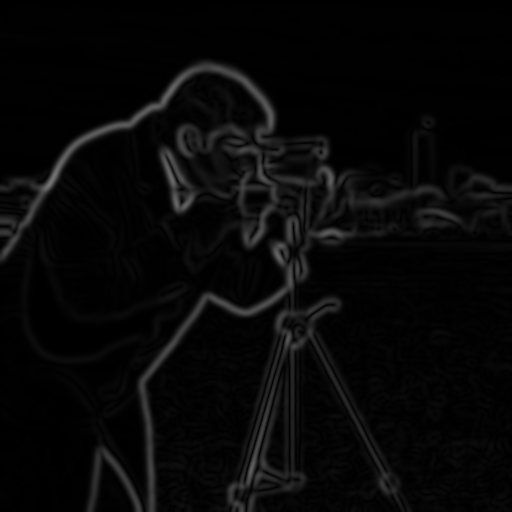

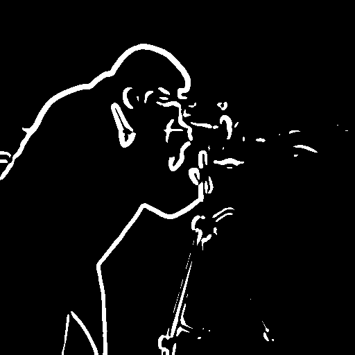
04 / Bells & Whistles: gradient orientation
Mandatory extension · No built-in angle functions

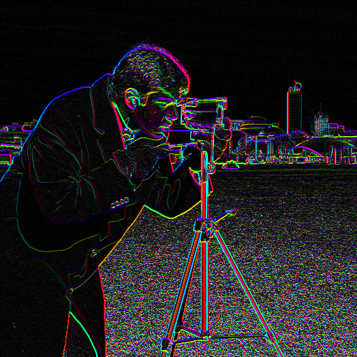

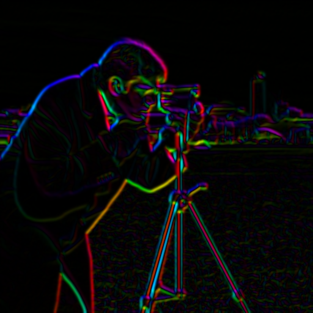

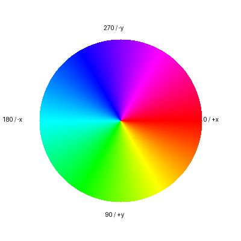
The gradient direction points toward brighter pixels and is perpendicular to the edge. In image coordinates, x points right and y points down. Angles therefore go clockwise: 0° right, 90° down, 180° left and 270° up. Reversing dark and light changes the angle by 180°.
I first calculate r = min(|Ix|, |Iy|) / max(|Ix|, |Iy|), so r stays between 0 and 1. For r > √2 − 1, I use z = (r − 1)/(r + 1) and add π/4 after the series. Otherwise, z = r. This keeps |z| small so the following 24-term series converges quickly:
a(z) = z − z³/3 + z⁵/5 − … (24 terms)
The next term, |z|49/49, is below 4 × 10−21. Floating-point rounding is larger than this series error. I use π/2 − a when |Iy| > |Ix|, then use the signs to choose the correct quadrant. I handle zero denominators separately. A zero gradient is stored with angle zero and shown as black; it has no real direction.
H = θ / (2π) · S = 1 · V = clip(M / 0.15, 0, 1)
I convert HSV to RGB with six color ranges using NumPy. Both images use the same brightness scale. Weak gradients look dark, so flat areas do not fill with bright colors. I do not use built-in inverse trigonometric or angle functions.
Manual direction calculation
def manual_orientation(dx, dy):
"""Direction in [0, 2pi), clockwise from +x in image coordinates.
Compute arctangent with a 24-term alternating series after reducing its
argument to abs(z) <= sqrt(2)-1. No built-in inverse trig or angle API.
Zero gradients receive direction zero; their displayed value is black.
"""
dx, dy = np.broadcast_arrays(np.asarray(dx, dtype=np.float64),
np.asarray(dy, dtype=np.float64))
if not np.isfinite(dx).all() or not np.isfinite(dy).all():
raise ValueError('Gradients must be finite.')
ax, ay = np.abs(dx), np.abs(dy)
largest = np.maximum(ax, ay)
ratio = np.divide(np.minimum(ax, ay), largest, out=np.zeros_like(largest), where=largest > 0)
reduce = ratio > np.sqrt(2.) - 1.
z = np.where(reduce, (ratio - 1.) / (ratio + 1.), ratio)
power = z.copy()
series = np.zeros_like(z)
for n in range(24):
series += power / (2 * n + 1)
power *= -z * z
alpha = series + np.where(reduce, np.pi / 4, 0.)
alpha = np.where(ay > ax, np.pi / 2 - alpha, alpha)
angle = np.where(dx < 0, np.pi - alpha, alpha)
angle = np.where(dy < 0, 2 * np.pi - angle, angle)
return np.where(largest > 0, angle % (2 * np.pi), 0.)
Verification and reproducibility
Seven unit tests check Gaussian shape and sum, DoG size and sum, agreement between the two methods, constant images, known directions, HSV colors and zero gradients. The raw files keep both methods, signed gradients and angles in radians.
I copy the input and source record from Part 1.2. It is the scikit-image camera sample by Lav Varshney, listed as CC0 in the official documentation. Input SHA-256: b0793d2adda0fa6ae899c03989482bff9a42d3d5690fc7e3648f2795d730c23a.
Algorithm source · Experiment source · Unit tests · Measurements · Raw arrays · Image source record
What I learned
I learned that blur reduces texture, but also weakens and widens edges. The threshold needs to change with it. Combining the two filters gives the same result here, including the borders. The color view adds direction information that the edge magnitude does not show.
Python 3.14.3 · NumPy 2.4.2 · SciPy 1.17.0 · OpenCV 4.13.0 · Pillow 12.1.0